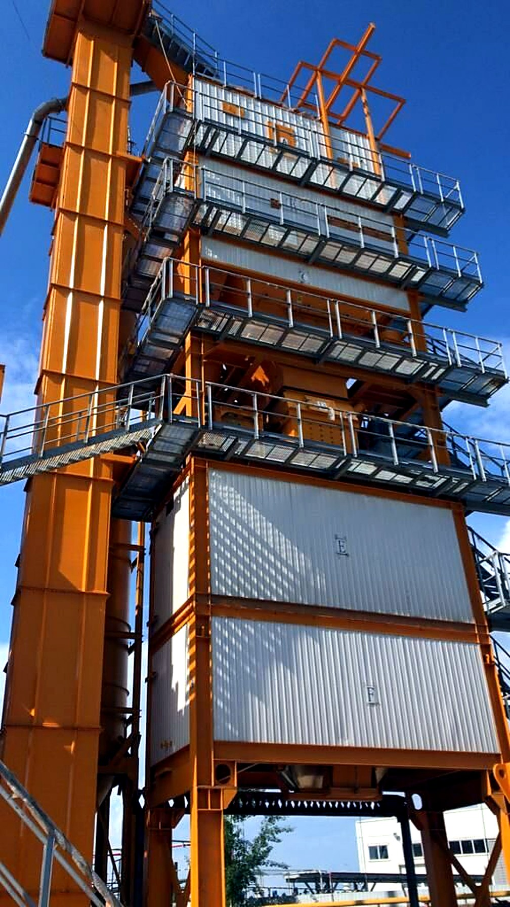
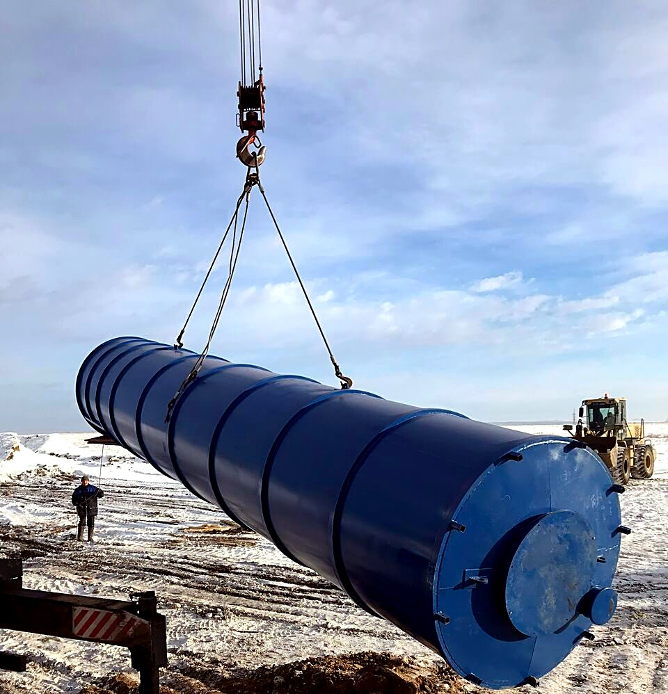

АБЗ под ваш объём
Стационарные и мобильные заводы, рециклинг асфальтогранулята, горелки, битумное хозяйство и автоматика. От подбора оборудования до запуска на объекте.
- Стационарные и мобильные
- QC, QSQ, QCS
- Рециклинг
- QCM, QCRQ, QSRX
- Горелки
- 4 бренда
- Автоматика
- SMARTABZ

Завод под ваш объём и технологию
- Решение под объём
- Конфигурация завода и узлов подбирается под задачи производства — от бетонных заводов и грунтосмесительных установок до АБЗ по новым ГОСТам.
- Стационарные и мобильные АБЗ
- В линейке стационарные заводы QC и мобильные QSQ, QCS — под разные форматы работ и площадки.
- Рециклинг асфальта
- Оборудование для переработки асфальтогранулята: решения QCM, QCRQ и QSRX.
- Горелки
- Поставляем горелки A-TECH, EBICO, Riello и Baltur. Подбор под установку и требования проекта.
- Битумное хозяйство
- Плавилки, танки, купольные резервуары, эмульсионные установки и оборудование для ПБВ.
- Автоматика
- Системы АСУ SMARTABZ и SMARTMIX. Состав системы уточняется при подборе под ваш завод.

Что мы уже поставляли для АБЗ
- 2013 Горелка A-TECH для асфальтосмесителя LB2000.
- 2015 Сушильный барабан для АБЗ.
- 2016 Два силоса по 35 м³.
- 2020 Битумное хранилище.
- 2022 Шнековые транспортёры для LB1500, металлодетекторы 650/800 мм.
Шеф-монтаж и пусконаладка входят в перечень услуг: наши инженеры работают на площадке и на связи с заводом.
Отвечают инженеры
С какими производителями вы работаете?
Дробление и сортировка: LIMING, ZENITH/SBM, DINGSHENG, VANGUARD. АБЗ и бетон: QUANCHENG, Echo Machinery, SINOROADER, DOM Machinery. Горелки и автоматика: A-TECH, EBICO, RIELLO, BALTUR, Honeywell, Siemens.
Кто выполняет монтаж и запуск?
Шеф-монтаж и пусконаладку выполняют наши инженеры на объекте. Оборудование выводится на рабочую производительность и передаётся заказчику.
Как решается вопрос с запчастями?
Поставляем запчасти к российским и импортным АБЗ и ДСК. Организуем изготовление деталей по чертежам на заводах-партнёрах. Сервисные центры — в Иркутске, Владивостоке и Москве.
Расскажите про завод — вернём расчёт
Пришлите объём производства, тип завода и площадку — инженер вернёт предварительную конфигурацию и сроки поставки.
- Почта
- info@sdors.ru
- Офис
- Иркутск, ул. Рабочего Штаба, 1/7
- Часы
- пн–пт 9:30–18:00